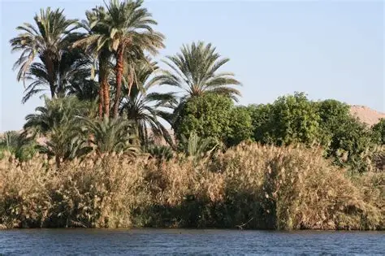

Flore
L'Égypte est un pays principalement constitué de désert et uniquement 3.5% de la superficie du pays est cultivée et habitée de manière permanente et 94% de l'Égypte est désertique. malgré ça, ce n'est pas une raison pour les plantes de ne pas se développer et à s'adapter. Il y a par exemple les lotus, les papyrus ou encore les palmiers etc... La vallée du Nil est très importante car elle fait partie d'une des seules parties cultivables grâce à l'irrigation du Nil.
